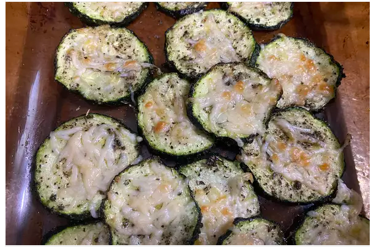

Zucchini Parmesan

Nutrition Facts
- Per Serving: 57 calories; fat 4g; cholesterol 4.4mg; sodium 206.3mg; carbohydrates 3.2g; protein 3g.
Ingredients
- 2 teaspoons olive oil
- 1 teaspoon Italian seasoning
- 1/4 teaspoon salt
- 1/8 teaspoon freshly ground black pepper
- 1 large zucchini, cut into 1/2-inch slices
- 1/4 cup shredded Parmesan cheese
Directions
- Preheat an air fryer to 400 degrees F (200 degrees C).
- Whisk olive oil, Italian seasoning, salt, and pepper together in a large bowl. Add zucchini rounds and toss to coat.
- Place zucchini in the basket of the air fryer in one layer and cook for 5 minutes. Flip zucchini over, sprinkle Parmesan cheese over the top, and cook until cheese is melted and starting to brown, about 5 more minutes.